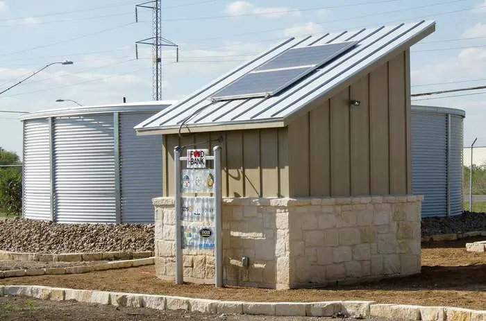

Three weekends, eleven drop-off sites, and enough donated goods to cover the next two months of routes. That is roughly twice what the same drive brought in last year, from four more sites and about the same number of volunteer hours.
The difference was not the number of boxes. It was whether anyone was standing next to them.
A box on its own collects a fraction
We ran two kinds of site this year. Six were unstaffed — a labelled bin inside a doorway, emptied every couple of days. Five had a volunteer at a table for two or three hours on the Saturday morning.
The staffed sites brought in more than three times as much per site. People who had walked past the bin on the way in stopped on the way out, once somebody had said hello and explained who the food was for. Several asked about volunteering while they were there.
It is the same finding the routes keep producing, in a different setting: the meal is the reason to show up, and the person is what makes it work.
What came in
- Shelf-stable staples — rice, pasta, tinned beans and tomatoes — which cover the bulk of what the kitchen builds around.
- Enough tinned fish and chicken to carry the protein line into November.
- More coffee than we can use before spring, which is not a complaint.
- A steady trickle of tinned fruit, the one thing people on the routes ask for by name.
Thank you to the congregations, two hardware stores, and the elementary school that hosted sites. We will run the same footprint in the spring, with a volunteer at every table this time.